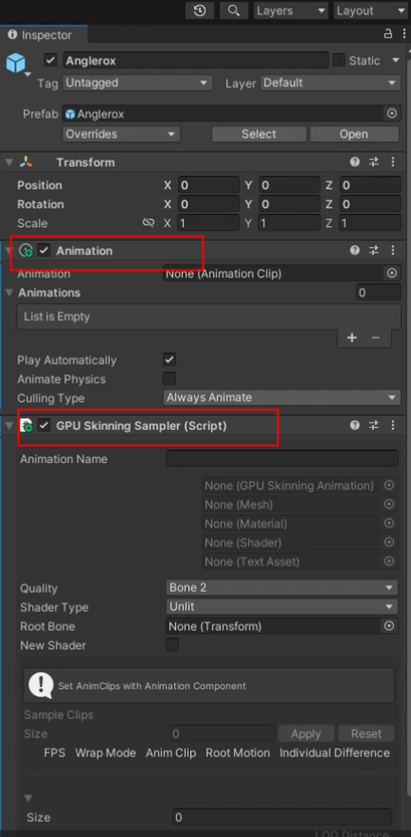

Getting Started
1、 新建一个空的场景用于采样。 2、 将预制拖入场景。如果有animator主件将其删除。添加Animation主件和GPUSkinning主件。 
3、 将要烘培的动作拖入Animation主件，然后刷新下Inspector界面（点击其他资源再点回来就行）。
4、 设置烘培相关配置，填入Animation Name 骨骼数量一般是选Bone2，具体问做动作的美术。 ShaderType选Unlit。 将场景里预制的骨骼根节点拖入Root Bone。 设置动作Wrap Mode，循环动作设置成Loop模式。
5、 点击Play Scene按钮启动场景。然后再点击Start Sampler
6、 点击Preview/Editor进行预览。选择不同的动作查看烘培结果。
7、创新GPUSkinning预制。场景中新建一个空对象，添加GPUSkinningPlayerMono脚本。将生成的数据拖入脚本，然后保存。